import numpy as np
import matplotlib.pyplot as plt
import h5py
from PIL import Image
%matplotlib inlineLogistic Regression with a Neural Network Mindset
Python
Machine Learning
NumPy
Logistic regression is implemented in NumPy and interpreted as a Perceptron. We use the resulting model to identify cats in an image classification problem, and experiment with tuning the learning rate of gradient descent.
- 1 - DATA
- 2 - THE SIGMOID
- 3 - LOGISTIC REGRESSION AND GRADIENT DESCENT
- 4 - FUNCTIONS
- 5 - THE MODEL
- 6 - ANIMAL TESTING
- 7 - EXPERIMENTING WITH LEARNING RATES
1 - DATA
The data comprises of training and test sets of 64x64 images, some of cats and some of not-cats. Each image is encoded as a NumPy array of shape (64,64,3), where the third dimension encapsulates the 3 RGB colour channels of the image.
The problem is then to contruct and train a model that can accurately classify an unseen image as either a cat (\(y=1\)) or a non-cat (\(y=0\)).
train_dataset = h5py.File('train_catvnoncat.h5', "r")
train_set_x_orig = np.array(train_dataset["train_set_x"][:])
train_set_y = np.array(train_dataset["train_set_y"][:])
train_set_y = train_set_y.reshape((1, train_set_y.shape[0]))test_dataset = h5py.File('test_catvnoncat.h5', "r")
test_set_x_orig = np.array(test_dataset["test_set_x"][:])
test_set_y = np.array(test_dataset["test_set_y"][:])
test_set_y = test_set_y.reshape((1, test_set_y.shape[0]))
classes = np.array(test_dataset["list_classes"][:])train_set_y.shape(1, 209)So our training set comprises of 209 images
test_set_y.shape(1, 50)And our test set comprises of another 50 images
# Example of a 'cat' image
index = 25
plt.imshow(train_set_x_orig[index])
print ("y = " + str(train_set_y[:, index]) + ", it's a '" + classes[np.squeeze(train_set_y[:, index])].decode("utf-8") + "' picture.")
plt.savefig('preview.png', bbox_inches='tight')y = [1], it's a 'cat' picture.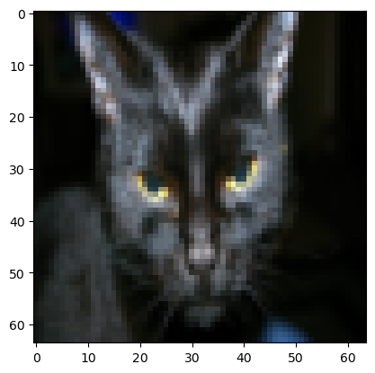
# Example of a 'not-cat' image
index = 86
plt.imshow(train_set_x_orig[index])
print ("y = " + str(train_set_y[:, index]) + ", it's a '" + classes[np.squeeze(train_set_y[:, index])].decode("utf-8") + "' picture.")y = [0], it's a 'non-cat' picture.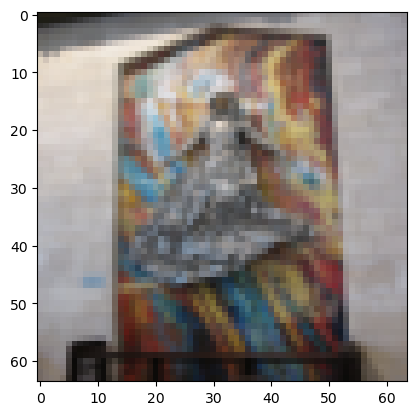
# A random picture from the training set
index = np.random.randint(209)
plt.imshow(train_set_x_orig[index])
print ("y = " + str(train_set_y[:, index]) + ", it's a '" + classes[np.squeeze(train_set_y[:, index])].decode("utf-8") + "' picture.")y = [0], it's a 'non-cat' picture.m_train = train_set_x_orig.shape[0]
m_test = test_set_x_orig.shape[0]
num_px = train_set_x_orig.shape[1]
print ("Number of training examples: m_train = " + str(m_train))
print ("Number of testing examples: m_test = " + str(m_test))
print ("Height/Width of each image: num_px = " + str(num_px))
print ("Each image is of size: (" + str(num_px) + ", " + str(num_px) + ", 3)")
print ("train_set_x shape: " + str(train_set_x_orig.shape))
print ("train_set_y shape: " + str(train_set_y.shape))
print ("test_set_x shape: " + str(test_set_x_orig.shape))
print ("test_set_y shape: " + str(test_set_y.shape))Number of training examples: m_train = 209
Number of testing examples: m_test = 50
Height/Width of each image: num_px = 64
Each image is of size: (64, 64, 3)
train_set_x shape: (209, 64, 64, 3)
train_set_y shape: (1, 209)
test_set_x shape: (50, 64, 64, 3)
test_set_y shape: (1, 50)train_set_x_flatten = train_set_x_orig.reshape(train_set_x_orig.shape[0],-1).T
test_set_x_flatten = test_set_x_orig.reshape(test_set_x_orig.shape[0],-1).T
print ("train_set_x_flatten shape: " + str(train_set_x_flatten.shape))
print ("train_set_y shape: " + str(train_set_y.shape))
print ("test_set_x_flatten shape: " + str(test_set_x_flatten.shape))
print ("test_set_y shape: " + str(test_set_y.shape))train_set_x_flatten shape: (12288, 209)
train_set_y shape: (1, 209)
test_set_x_flatten shape: (12288, 50)
test_set_y shape: (1, 50)# Standardizing the feature data
train_set_x = train_set_x_flatten / 255.
test_set_x = test_set_x_flatten / 255.2- THE SIGMOID
The sigmoid function \(\sigma\) is defined as
\[\sigma: \mathbb{R} \to \left(0,1\right)\]
\[\begin{align*} \sigma(x) &:= \frac{1}{1 + e^{-x}}\\[0.1cm] &= \frac{e^{x}}{1+e^{x}} \end{align*}\]
\(\sigma\) is non-linear, smooth and strictly increasing. It is the activation function of choice for the output layer of Neural Networks applied to binary classification problems.
In particular, logistic regression uses the sigmoid to extract a prediction of the label for a given feature vector (after composing with a threshold).
def sigmoid(z):
"""
Compute the sigmoid of z
Arguments:
z -- A scalar or numpy array of any size.
Return:
s -- sigmoid(z)
"""
return 1/(1+np.exp(-z))This implementation of the sigmoid, using numpy.exp instead of math.exp, allows it to be applied to a NumPy array element-wise. This will turn out to be important when implementing logistic regression.
For example, we can use this property to plot a graph of \(\sigma\) on \(\mathbb{R}\).
x_values = np.linspace(-10,10,100)
y_values = sigmoid(x_values) # Applying the sigmoid to each element of the x_values array
plt.plot(x_values,y_values,label=r'$\sigma (x) = \frac{1}{1 + e^{-x}}$')
plt.axhline(0.5, color='gray', linestyle='--', linewidth=1)
plt.xlabel('$x$')
plt.ylabel('$y$')
plt.legend()<matplotlib.legend.Legend at 0x17aa73d0c10>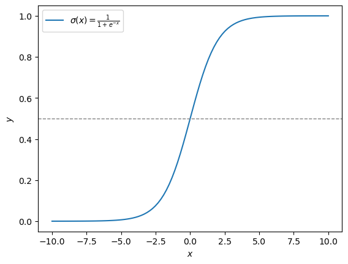
3 - LOGISTIC REGRESSION AND GRADIENT DESCENT
The following image illustrates how the algorithm of logistic regression may be viewed as as a single perceptron with sigmoid activation.

3.1 - Mathematical expression of the algorithm
For one training example \(\left(x^{(i)},y^{(i)}\right)\) in the training set \(\left\{ \left(x^{(i)} , y^{(i)} \right) \right\} _{i=1}^{m}\) and a choice of parameters \(w\in\mathbb{R}^{n}\), \(b\in\mathbb{R}\)
\[z^{(i)} = w^T x^{(i)} + b\]
\[\hat{y}^{(i)} = a^{(i)} = \sigma\left(z^{(i)}\right)\]
where \(\sigma: \mathbb{R} \to \left(0,1\right)\) is the sigmoid defined above, \(n\) is the number of features and \(m = m_{\text{train}}\) is the number of training examples.
The prediction \(\hat{y}^{(i)}\in \left(0,1\right)\) is interpreted as the probability that \(x^{(i)}\) is in class 1 (i.e. is an image of a cat) given the parameters \(w\), \(b\)
\[\hat{y}^{(i)} = \mathbb{P}\left( y^{(i)}=1 \,|\, x^{(i)} \,; \,w, b \right)\]
We can extract a binary prediction in \(\{0,1\} \simeq \{\text{non-cat},\text{cat}\}\) from the prediction \(\hat{y}^{(i)}\) by applying a threshold \[y^{(i)}_{\text{pred}} = \mathbb{1} {\left\{a^{(i)} > 0.5\right\}} = \begin{cases} 1 & \text{if}\ a^{(i)} > 0.5 \\ 0 & \text{otherwise} \end{cases} \]
Such a threshold can be implemented in code using, for example, numpy.round.
We use the binary cross entropy loss function \(\mathcal{L}\), defined as
\[\begin{align*} \mathcal{L}\left(a^{(i)}, y^{(i)}\right) &= - y^{(i)} \log\left(a^{(i)}\right) - \left(1-y^{(i)} \right) \log\left(1-a^{(i)}\right)\\[0.2cm] &= \begin{cases} - \log\left(a^{(i)}\right) & \text{if } y^{(i)} = 1 \\ - \log\left(1 - a^{(i)}\right) & \text{if } y^{(i)} = 0 \end{cases} \end{align*}\]
The cost \(J\) is then computed by summing over all training examples:
\[\begin{align*} J &= \frac{1}{m} \sum_{i=1}^{m} \mathcal{L}\left(a^{(i)}, y^{(i)}\right)\\[0.2cm] &= \frac{-1}{m} \sum_{i=1}^{m} \left[ y^{(i)} \log\left(a^{(i)}\right) + \left(1-y^{(i)} \right) \log\left(1-a^{(i)}\right) \right] \end{align*}\]
3.2 - Vectorization
Looping over all the \(m\) training examples \(\left (x^{(i)},y^{(i)} \right)\) in turn to calculate \(\hat{y}^{(i)} = a^{(i)} = \sigma\left(z^{(i)}\right) = \sigma\left( w^T x^{(i)} + b\right)\) and \(\mathcal{L}\left(a^{(i)}, y^{(i)}\right)\) is computationally inefficient if \(m\) is large \(\left(\text{e.g.}\,\, m\sim10^6\right)\) as is common in modern industry applications.
By turning to a so called Vectorized implementation we can take advantage of NumPy’s powerful numerical linear algebra capabilities. Define vectors \(Z = \left( z^{(1)}, z^{(2)}, \dots, z^{(m)} \right) \in \mathbb{R}^m\) and \(A = \left( a^{(1)}, a^{(2)}, \dots, a^{(m)} \right) \in \mathbb{R}^m\). Define the \(n\,\times\,m\) matrix \(X\) with \(i^{\text{th}}\) column \(x^{(i)}\). That is,
\[\begin{equation} X = \begin{bmatrix} | & | & \cdots & | \\ x^{(1)} & x^{(2)} & \cdots & x^{(m)} \\ | & | & \cdots & | \end{bmatrix}\in \mathcal{M}_{n,m} \left(\mathbb{R}\right) \end{equation}\]
Then
\[\begin{align*} w^T X + \left(b,b,\dots,b\right) &= \left( w^T x^{(1)}+b, \,w^T x^{(2)}+b, \dots ,\,w^T x^{(n)}+b \right)\\[0.2cm] &= \left( z^{(1)}, z^{(2)}, \dots, z^{(m)} \right)\\[0.2cm] &= Z \end{align*}\]
So if \(\mathbf{b} = \left(b,b,\dots,b\right)\) then \(Z = w^T X + \mathbf{b}\). We can implement this in code as Z = np.dot(w.T,X) + b where we have taken advantage of python broadcasting to add the scalar b to the array np.dot(w.T,X). NumPy then interprets this addition as element-wise. We then have \(A = \left( a^{(1)}, a^{(2)}, \dots, a^{(m)} \right) = \sigma (Z)\) since the sigmoid \(\sigma\) acts on arrays element-wise.
3.3 - Gradient Descent
The optimization problem \[ \min_{w,b} J(w, b) \]
is numerically solved through application of gradient descent. For our purposes, gradient descent comprises of recursively updating \(b\) and the components \(w_j\) of \(w\) according to
\[\begin{align*} w_j &\rightarrow w_j - \alpha \frac{\partial J}{\partial w_j}\\[0.1cm] b &\rightarrow b - \alpha \frac{\partial J}{\partial b} \end{align*}\]
where \(\alpha << 1\) is a fixed hyperparameter called the learning rate. Another free hyperparameter introduced with gradient descent is the number of iterations to repeat this updating process.
4 - FUNCTIONS
Defining some functions needed to construct the logistic regression model
def initialize_with_zeros(dim):
"""
Create a vector of zeros of shape (dim, 1) for w and initializes b to 0.
Argument:
dim -- size of the w vector we want (or number of parameters in this case)
Returns:
w -- initialized vector of shape (dim, 1)
b -- initialized scalar (corresponds to the bias) of type float
"""
w = np.zeros((dim,1))
b = float(0)
return w, bdef propagate(w, b, X, Y):
"""
Implement the cost function and its gradient for the propagation explained above
Arguments:
w -- weights, a numpy array of size (num_px * num_px * 3, 1)
b -- bias, a scalar
X -- data of size (num_px * num_px * 3, number of examples)
Y -- true "label" vector (containing 0 if non-cat, 1 if cat) of size (1, number of examples)
Return:
grads -- dictionary containing the gradients of the weights and bias
(dw -- gradient of the loss with respect to w, thus same shape as w)
(db -- gradient of the loss with respect to b, thus same shape as b)
cost -- negative log-likelihood cost for logistic regression
"""
m = X.shape[1]
A = sigmoid(np.dot(w.T,X)+b)
cost = (-1/m) * (np.dot(Y, np.log(A).T) + np.dot((1 - Y), np.log(1 - A).T))
dw = (1/m)*np.dot(X,(A-Y).T)
db = (1/m)*np.sum(A-Y)
cost = np.squeeze(np.array(cost))
grads = {"dw": dw,
"db": db}
return grads, costdef optimize(w, b, X, Y, num_iterations=100, learning_rate=0.009, print_cost=False):
"""
Optimizes w and b by running a gradient descent algorithm
Arguments:
w -- weights, a numpy array of size (num_px * num_px * 3, 1)
b -- bias, a scalar
X -- data of shape (num_px * num_px * 3, number of examples)
Y -- true "label" vector (containing 0 if non-cat, 1 if cat), of shape (1, number of examples)
num_iterations -- number of iterations of the optimization loop
learning_rate -- learning rate of the gradient descent update rule
print_cost -- True to print the loss every 100 steps
Returns:
params -- dictionary containing the weights w and bias b
grads -- dictionary containing the gradients of the weights and bias with respect to the cost function
costs -- list of all the costs computed during the optimization, this will be used to plot the learning curve.
"""
costs = []
for i in range(num_iterations):
grads, cost = propagate(w,b,X,Y)
dw = grads["dw"]
db = grads["db"]
w = w - learning_rate*dw
b = b - learning_rate*db
if i % 100 == 0:
costs.append(cost)
# Print the cost every 100 training iterations
if print_cost:
print ("Cost after iteration %i: %f" %(i, cost))
params = {"w": w,
"b": b}
grads = {"dw": dw,
"db": db}
return params, grads, costsdef predict(w, b, X):
'''
Predict whether the label is 0 or 1 using learned logistic regression parameters (w, b)
Arguments:
w -- weights, a numpy array of size (num_px * num_px * 3, 1)
b -- bias, a scalar
X -- data of size (num_px * num_px * 3, number of examples)
Returns:
Y_prediction -- a numpy array (vector) containing all predictions (0/1) for the examples in X
'''
m = X.shape[1]
Y_prediction = np.zeros((1, m))
w = w.reshape(X.shape[0], 1)
A = sigmoid(np.dot(w.T,X)+b)
for i in range(A.shape[1]):
Y_prediction[0,i] = np.round(A[0,i])
return Y_prediction5 - THE MODEL
Combining the previously defined functions intialize_with_zeros, propagate, optimize and predict into the logistic regression model
def model(X_train, Y_train, X_test, Y_test, num_iterations=2000, learning_rate=0.5, print_cost=False):
"""
Combines the helper functions to construct the model
Arguments:
X_train -- training set represented by a numpy array of shape (num_px * num_px * 3, m_train)
Y_train -- training labels represented by a numpy array (vector) of shape (1, m_train)
X_test -- test set represented by a numpy array of shape (num_px * num_px * 3, m_test)
Y_test -- test labels represented by a numpy array (vector) of shape (1, m_test)
num_iterations -- hyperparameter representing the number of iterations to optimize the parameters
learning_rate -- hyperparameter representing the learning rate used in the update rule of optimize()
print_cost -- Set to True to print the cost every 100 iterations
Returns:
d -- dictionary containing information about the model.
"""
w, b = initialize_with_zeros(X_train.shape[0])
params, grads, costs = optimize(w, b, X_train, Y_train, num_iterations, learning_rate, print_cost=False)
w = params['w']
b = params['b']
Y_prediction_test = predict(w,b,X_test)
Y_prediction_train = predict(w,b,X_train)
# Print train/test Errors
if print_cost:
print("train accuracy: {} %".format(100 - np.mean(np.abs(Y_prediction_train - Y_train)) * 100))
print("test accuracy: {} %".format(100 - np.mean(np.abs(Y_prediction_test - Y_test)) * 100))
d = {"costs": costs,
"Y_prediction_test": Y_prediction_test,
"Y_prediction_train" : Y_prediction_train,
"w" : w,
"b" : b,
"learning_rate" : learning_rate,
"num_iterations": num_iterations}
return dlogistic_regression_model = model(train_set_x, train_set_y, test_set_x, test_set_y, num_iterations=2000, learning_rate=0.005, print_cost=True)train accuracy: 99.04306220095694 %
test accuracy: 70.0 %The model accuractely classified >99% of the images in the training set and 70% of the images in the test set, suggesting that we are experiences overfitting to our training data.
This could be counteracted in several ways, such as including an \(L_2\) regularization term in the expression for the cost function \(J\). We won’t explore such possibilities in this post.
5.1 - Errors and learning curves
# Example of a 'cat' that was inaccuractely classified as 'not-cat' (False Negative)
index = 10
plt.imshow(test_set_x[:, index].reshape((num_px, num_px, 3)))
print ("y = " + str(test_set_y[0,index]) + ", predicted as \"" + classes[int(logistic_regression_model['Y_prediction_test'][0,index])].decode("utf-8") + "\" picture.")y = 1, predicted as "non-cat" picture.
# Example of a 'not-cat' that was inaccuractely classified as 'cat' (False Positive)
index = 34
plt.imshow(test_set_x[:, index].reshape((num_px, num_px, 3)))
print ("y = " + str(test_set_y[0,index]) + ", predicted as \"" + classes[int(logistic_regression_model['Y_prediction_test'][0,index])].decode("utf-8") + "\" picture.")y = 0, predicted as "cat" picture.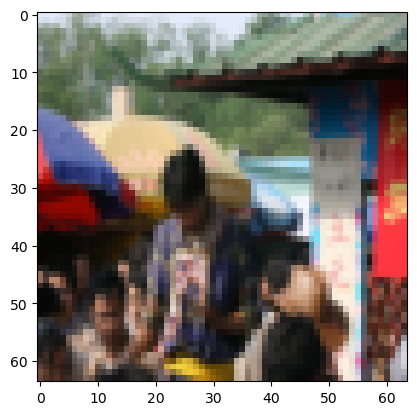
# Plot learning curve (with costs)
costs = np.squeeze(logistic_regression_model['costs'])
plt.plot(costs)
plt.ylabel('cost')
plt.xlabel('iterations (per hundreds)')
plt.title("Learning rate = " + str(logistic_regression_model["learning_rate"]))
plt.show()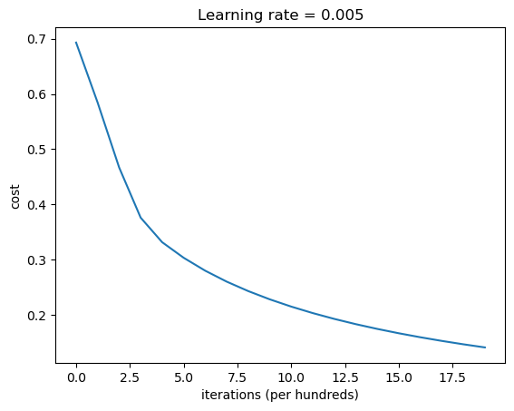
6 - ANIMAL TESTING
def is_cat(image_str):
'''
Applies the trained logistic regression model to predict if an inputted image is a cat (y=1) or a non-cat (y=0)
Arguments:
image_str - a string encoding the file name of the .jpg file,
e.g. 'cat.jpg' if cat.jpg is the file name of an image saved in the same directory as this notebook.
Returns:
None
'''
# Read the original image
original_image = np.array(Image.open(image_str))
# Show the original image
plt.subplot(1, 2, 1)
plt.imshow(original_image)
plt.title("Original Image")
# Resize the image to 64x64
resized_image = np.array(Image.open(image_str).resize((num_px, num_px)))
# Show the resized image
plt.subplot(1, 2, 2)
plt.imshow(resized_image)
plt.title("Resized Image (64x64)")
# Standardize and flatten the resized image
image = resized_image / 255.
image = image.reshape((1, num_px * num_px * 3)).T
# Predict label using training logistic regression model
my_predicted_image = predict(logistic_regression_model["w"], logistic_regression_model["b"], image)
# Print the prediction for the resized image
print("y = " + str(int(np.squeeze(my_predicted_image))) + ", the model predicts this is a \"" + classes[int(np.squeeze(my_predicted_image)),].decode("utf-8") + "\" picture.")Let’s test the function is_cat on an image of my own cat, William.
He’s middle-aged and overweight.
is_cat('william.jpg')y = 0, the model predicts this is a "non-cat" picture.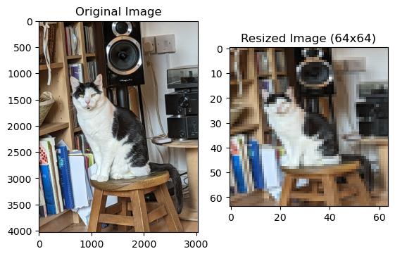
Unsuprising. He’s always been a disappointment.
Observing on some other images in my camera roll:
is_cat('flora.jpg')y = 1, the model predicts this is a "cat" picture.is_cat('ginger_greek_cat.jpg')y = 0, the model predicts this is a "non-cat" picture.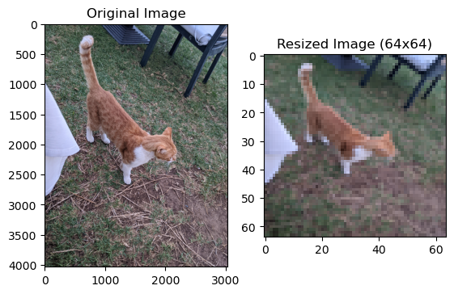
is_cat('william_yawning.jpg')y = 1, the model predicts this is a "cat" picture.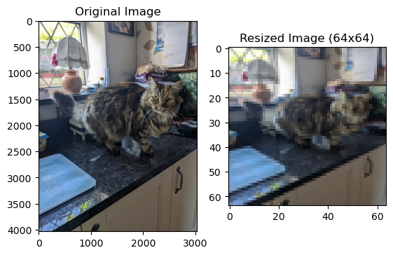
is_cat('cambridge_cat.jpg')y = 1, the model predicts this is a "cat" picture.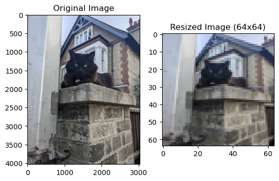
is_cat('lexi.jpg')y = 0, the model predicts this is a "non-cat" picture.is_cat('toby.jpg')y = 1, the model predicts this is a "cat" picture.Oh dear. Time to do some tuning.
7 - EXPERIMENTING WITH LEARNING RATES
def experiment_with_lr(learning_rates,num_iter):
'''
Trains a model with a choice of different learning rates with num_iterations=num_iter, printing the train/test accuracy and plotting the resulting learning curves.
Arguments:
learning_rates - a list of learning rates (a list of floats between 0 and 1)
num_iter - hyperparameter representing the number of iterations to optimize the parameters (integer)
Returns:
None
'''
for lr in learning_rates:
print ("Training a model with learning rate: " + str(lr))
models[str(lr)] = model(train_set_x, train_set_y, test_set_x, test_set_y, num_iterations=num_iter, learning_rate=lr, print_cost=True)
print ('\n' + "-------------------------------------------------------" + '\n')
for lr in learning_rates:
plt.plot(np.squeeze(models[str(lr)]["costs"]), label=str(models[str(lr)]["learning_rate"]))
plt.ylabel('Cost')
plt.xlabel('Iterations (hundreds)')
legend = plt.legend(loc='upper center', shadow=True)
frame = legend.get_frame()
frame.set_facecolor('0.90')learning_rates = [0.01, 0.001, 0.0001]
experiment_with_lr(learning_rates,num_iter=3000)Training a model with learning rate: 0.01
train accuracy: 100.0 %
test accuracy: 68.0 %
-------------------------------------------------------
Training a model with learning rate: 0.001
train accuracy: 93.77990430622009 %
test accuracy: 74.0 %
-------------------------------------------------------
Training a model with learning rate: 0.0001
train accuracy: 73.6842105263158 %
test accuracy: 50.0 %
-------------------------------------------------------
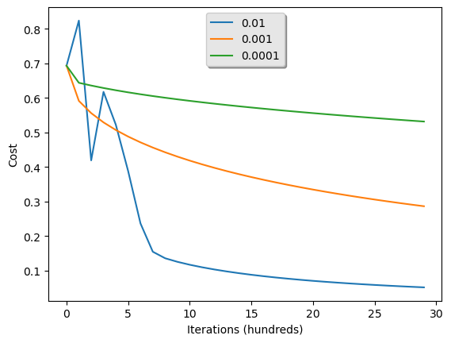
The model performed significantly better with the highest learning rate of 0.01
learning_rates = [0.005, 0.01, 0.015]
experiment_with_lr(learning_rates,num_iter=3000)Training a model with learning rate: 0.005
train accuracy: 99.52153110047847 %
test accuracy: 68.0 %
-------------------------------------------------------
Training a model with learning rate: 0.01
train accuracy: 100.0 %
test accuracy: 68.0 %
-------------------------------------------------------
Training a model with learning rate: 0.015
train accuracy: 100.0 %
test accuracy: 68.0 %
-------------------------------------------------------
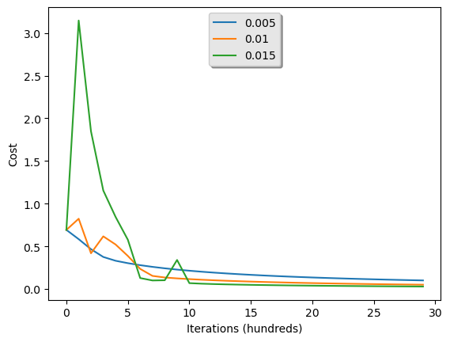
learning_rates = [0.01, 0.0125, 0.015, 0.0175, 0.02]
experiment_with_lr(learning_rates,num_iter=3000)Training a model with learning rate: 0.01
train accuracy: 100.0 %
test accuracy: 68.0 %
-------------------------------------------------------
Training a model with learning rate: 0.0125
train accuracy: 100.0 %
test accuracy: 68.0 %
-------------------------------------------------------
Training a model with learning rate: 0.015
train accuracy: 100.0 %
test accuracy: 68.0 %
-------------------------------------------------------
Training a model with learning rate: 0.0175
train accuracy: 100.0 %
test accuracy: 68.0 %
-------------------------------------------------------
Training a model with learning rate: 0.02
train accuracy: 100.0 %
test accuracy: 68.0 %
-------------------------------------------------------
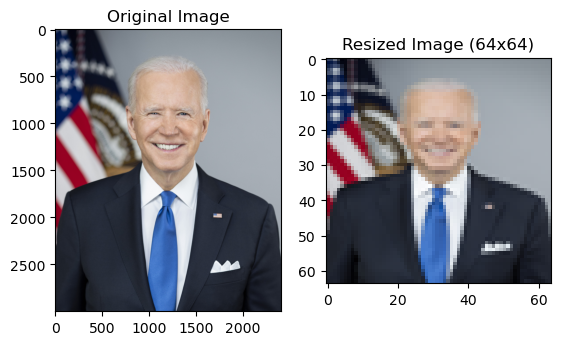
Tuning the learning rate at such a fine resolution doesn’t appear to make a difference to the final performance on the test set.